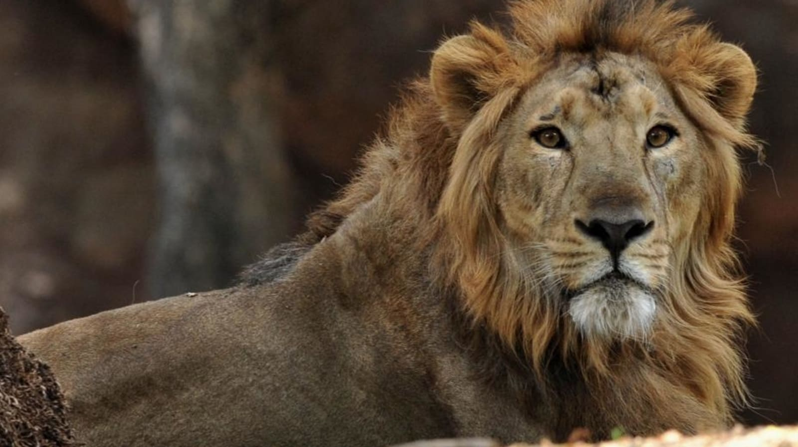

|  |
The lion (Panthera leo) is a large cat of the genus Panthera native to Africa and India. It has a muscular, deep-chested body, short, rounded head, round ears, and a hairy tuft at the end of its tail. It is sexually dimorphic; adult male lions are larger than females and have a prominent mane. It is a social species, forming groups called prides. A lion's pride consists of a few adult males, related females, and cubs. Groups of female lions usually hunt together, preying mostly on large ungulates. The lion is an apex and keystone predator; although some lions scavenge when opportunities occur and have been known to hunt humans, the species typically does not.
The lion inhabits grasslands, savannas and shrublands. It is usually more diurnal than other wild cats, but when persecuted, it adapts to being active at night and at twilight. During the Neolithic period, the lion ranged throughout Africa, Southeast Europe, the Caucasus, and Western and South Asia, but it has been reduced to fragmented populations in sub-Saharan Africa and one population in western India. It has been listed as Vulnerable on the IUCN Red List since 1996 because populations in African countries have declined by about 43% since the early 1990s. Lion populations are untenable outside designated protected areas. Although the cause of the decline is not fully understood, habitat loss and conflicts with humans are the greatest causes for concern. |